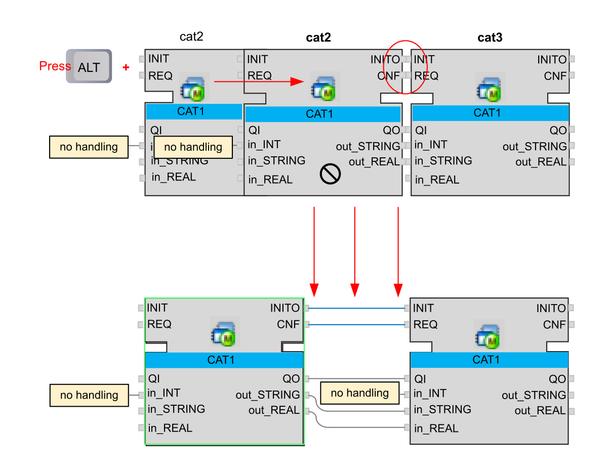

3. Connection Objects
-
Create connections between function blocks:
Step
Description
1
Click on an interface of the function block
2
Hold down mouse key and draw the connection to the relevant interface
alternatively
1
Right-click on an interface of the function block
2
Select Routing Linker from context menu
3
The new connection clings to the cursor and can be connected to the relevant interface
-
Connections can also be set without a visible line. This is usable e.g. for connections over long distances in the project.
Create such a connection directly by right-click on the relevant interface and then select Connections... from context menu. By this, a sub menu will open at the chosen interface, where you can insert the label of the connection endpoint directly, or select it from drop down list.
For existing connections: refer to 4. Modify existing Connections and Attributes.
-
To make visible lines out of Cross References: Right-click on one symbol of the relevant connection then click the Enable/Disable cross reference icon
 .
.
-
Create several connection lines between two function blocks simultaneously: For large function blocks with several connections it is not necessary to draw each single line separately.
There are two options:
a.) Press the Alt key and drag a function block, with the left mouse key pressed, onto the function block to connect it with. The Alt key can be released as soon as the function block has been moved a little bit. The function block will snap to the connections of the second function block when it is close enough. Now release the mouse key. The function block returns to its previous position and the connections are drawn. The process can be canceled by pressing Esc or dragging the function block apart from the connections of the second block.

b.) Select the two function blocks to connect, then right-click on one of the two function blocks and choose or . Depending on the function block where the right-click was made, you can now connect the inputs or outputs of this function block.